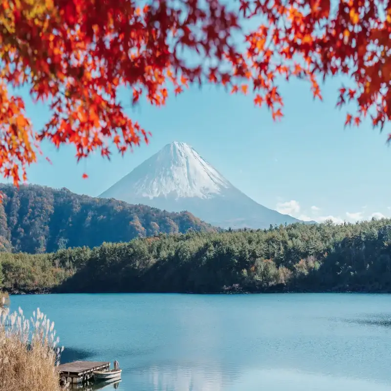
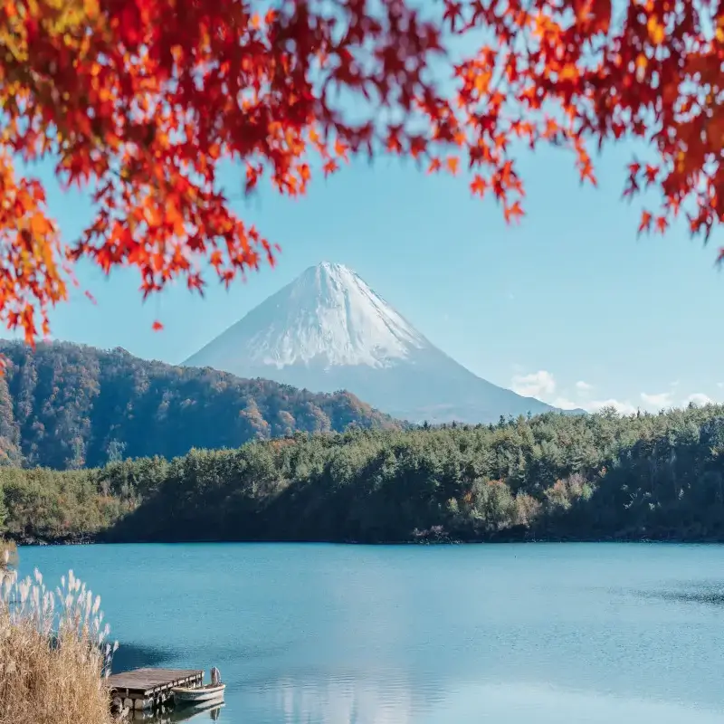

Japón
Tradición y Futuro en Perfecto Equilibrio (12 días culturales)
Este itinerario recorre las ciudades más emblemáticas de Japón, combinando la modernidad de Tokio con la tradición de Kioto y la esencia histórica de Nara. Un viaje que permite descubrir templos, barrios futuristas, gastronomía única y costumbres ancestrales.
- 🗼 Tokio
- ⛩️ Kioto
- 🦌 Nara
- 🍣 Gastronomía